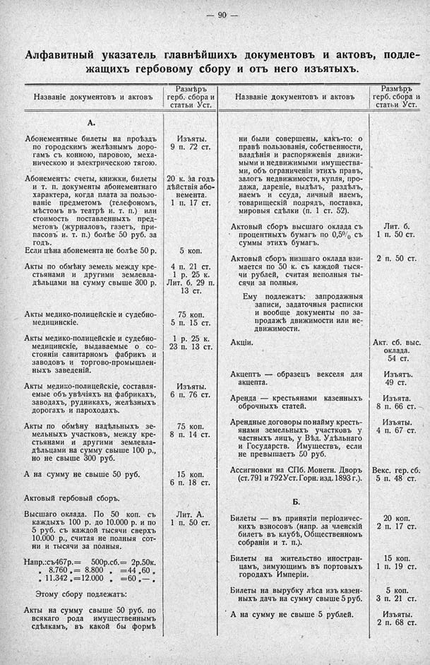

Лист источника 136
Скан

Распознанный текст
— 90 —
Алфавитный указатель главнѣйшихъ документовъ и актовъ, подле-
жащихъ гербовому сбору и отъ него изъятыхъ.
Названіе документовъ и актовъ Размѣръ герб. сбора и статьи Уст.
Названіе документовъ и актовъ Размѣръ герб. сбора и статьи Уст.
А.
Абонементные билеты на проѣздъ
по городскимъ желѣзнымъ доро-
гамъ съ конною, паровою, меха-
ническою и электрическою тягою. Изъяты.
9 п. 72 ст.
Абонементъ: счеты, книжки, билеты
и т. п. документы абонементнаго
характера, когда плата за пользо-
ваніе предметомъ (телефономъ,
мѣстомъ въ театрѣ и. т. п.) или
стоимость поставленныхъ пред-
метовъ (журналовъ, газетъ, при-
пасовъ и. т. п.) болѣе 50 руб. за
годъ. 20 к. за годъ
дѣйствія або-
немента.
1 п. 17 ст.
Если цѣна абонемента не болѣе 50 р. 5 коп.
Акты по обмѣну земель между кре-
стьянами и другими землевла-
дѣльцами на сумму свыше 300 р. 4 п. 21 ст.
1 р. 25 к.
Лит. б. 29 п.
13 ст.
Акты медико-полицейскіе и судебно-
медицинскіе. 75 коп.
5 п. 15 ст.
Акты медико-полицейскіе и судебно-
медицинскіе, выдаваемые о со-
стояніи санитарномъ фабрикъ и
заводовъ и торгово-промышлен-
ныхъ заведеній. 1 р. 25 к.
23 п. 13 ст.
Акты медико-полицейскіе, составля-
емые объ увѣчіяхъ на фабрикахъ,
заводахъ, рудникахъ, желѣзныхъ
дорогахъ и пароходахъ. Изъяты.
6 п. 76 ст.
Акты по обмѣну надѣльныхъ зе-
мельныхъ участковъ, между кре-
стьянами и другими землевла-
дѣльцами на сумму свыше 100 р.,
но не свыше 300 руб. 75 коп.
8 п. 14 ст.
А на сумму не свыше 50 руб. 15 коп.
6 п. 18 ст.
Актовый гербовый сборъ.
Высшаго оклада. По 50 коп. съ
каждыхъ 100 р. до 10.000 р. и по
5 руб. съ каждой тысячи сверхъ
10.000 р., считая не полныя сот-
ни и тысячи за полныя. Лит. А.
1 п. 50 ст.
Напр.: съ 467 р. = 500 р. сб. = 2 р. 50 к.
„ 8.760 „ = 8.800 „ = 44 „ 60 „
„ 11.342 „ = 12.000 „ = 60 „ — „
Этому сбору подлежатъ:
Акты на сумму свыше 50 руб. по
всякаго рода имущественнымъ
сдѣлкамъ, въ какой бы формѣ
ни были совершены, какъ-то: о
правѣ пользованія, собственности,
владѣнія и распоряженія движи-
мыми и недвижимыми имущества-
ми, объ ограниченіи этихъ правъ,
залогъ недвижимости, купля, про-
дажа, дареніе, выдѣлъ, раздѣлъ,
наемъ и ссуда, личный наемъ,
товарищескій подрядъ, поставка,
мировыя сдѣлки (п. 1 ст. 52).
Актовый сборъ высшаго оклада съ
процентныхъ бумагъ по 0,5% съ
суммы этихъ бумагъ. Лит. б.
1 п. 50 ст.
Актовый сборъ низшаго оклада взи-
мается по 50 к. съ каждой тыся-
чи рублей, считая неполныя ты-
сячи за полныя. 2 п. 50 ст.
Ему подлежатъ: запродажныя
записи, задаточныя расписки
и вообще документы по за-
продажѣ движимости или не-
движимости.
Акціи. Акт. сб. выс.
оклада.
54 ст.
Акцептъ — образецъ векселя для
акцепта. Изъятъ.
49 ст.
Аренда — крестьянами казенныхъ
оброчныхъ статей. Изъята.
8 п. 66 ст.
Арендные договоры по найму кресть-
янами земельныхъ участковъ у
частныхъ лицъ, у Вѣд. Удѣльнаго
и Государств. Имуществъ, если
не превышаетъ 50 руб. Изъяты.
4 п. 67 ст.
Ассигновки на СПб. Монетн. Дворъ
(ст. 791 и 792 Уст. Горн. изд. 1893 г.). Векс. гер. сб.
5 п. 48 ст.
Б.
Билеты — въ принятіи періодичес-
кихъ взносовъ (напр. за членскій
билетъ въ клубѣ, Общественномъ
собраніи и т. п.). 20 коп.
2 п. 17 ст.
Билеты на жительство иностран-
цамъ, зимующимъ въ портовыхъ
городахъ Имперіи. 15 коп.
1 п. 19 ст.
Билеты на вырубку лѣса изъ казен-
ныхъ дачъ на сумму свыше 5 руб. 5 коп.
3 п. 21 ст.
А на сумму не свыше 5 рублей. Изъяты.
2 п. 68 ст.